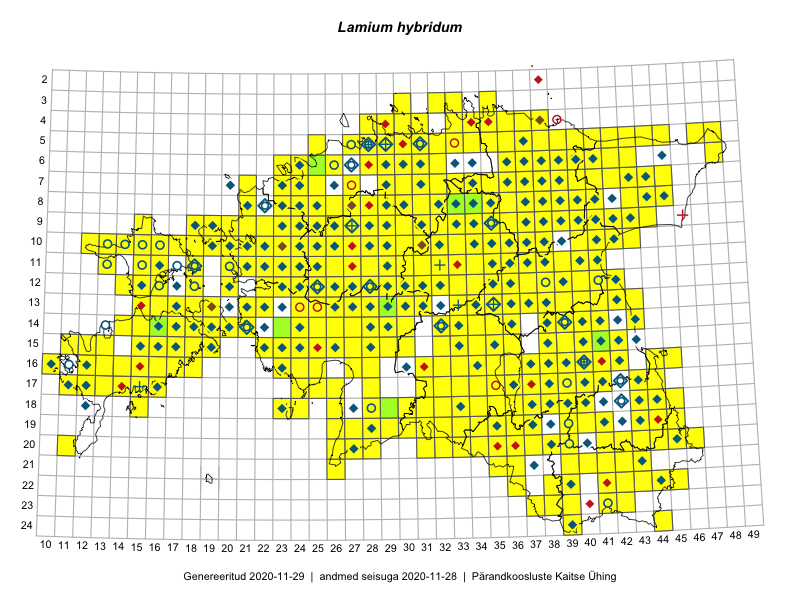

Lamium hybridum
Uuendatud: 2016-12-01
Kaardile koondatud taksonid: Lamium hybridum Vill.

Kaart põhineb 621 kirjel, neist vaatlusi 618 ja eksemplare 3.
Kuvatud viited 20 esimesele andmebaasikirjele, ülejäänud PlutoFis
- Malle Leht: 2015-05-16: : ala
- Tiit Hallikma, Toomas Kukk, Indrek Tammekänd: 2015-06-09: 12-28: ala
- Malle Leht: 2015-07-09: : ala
- Meeli Mesipuu, Kadri Tali: 2015-04-30: 17-39: ala
- Peedu Saar: 2015-05-09: 13-30: ala
- Peedu Saar, Timo Luhamäe: 2015-05-10: 12-31: ala
- Peedu Saar, Timo Luhamäe: 2015-05-11: 11-36: ala
- Peedu Saar, Timo Luhamäe: 2015-05-11: 12-36: ala
- Peedu Saar, Timo Luhamäe: 2015-05-12: 07-36: ala
- Peedu Saar, Timo Luhamäe: 2015-05-13: 06-39: ala
- Peedu Saar, Timo Luhamäe: 2015-05-13: 06-40: ala
- Peedu Saar, Timo Luhamäe: 2015-05-13: 07-39: ala
- Peedu Saar: 2015-05-14: 09-43: ala
- Peedu Saar: 2015-05-14: 10-42: ala
- Toomas Kukk, Eerik Leibak: 2015-08-07: 16-15: GPS punkt
- Toomas Kukk, Eerik Leibak: 2015-08-09: 13-15: ala
- Peedu Saar, Liina Oja: 2015-05-22: 19-29: ala
- Thea Kull: 2015-07-07: 16-40: ala
- Peedu Saar, Liina Oja: 2015-05-21: 16-24: ala
- Peedu Saar, Liina Oja: 2015-05-21: 16-25: ala